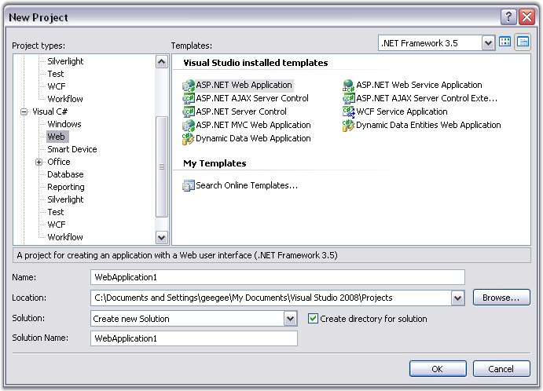
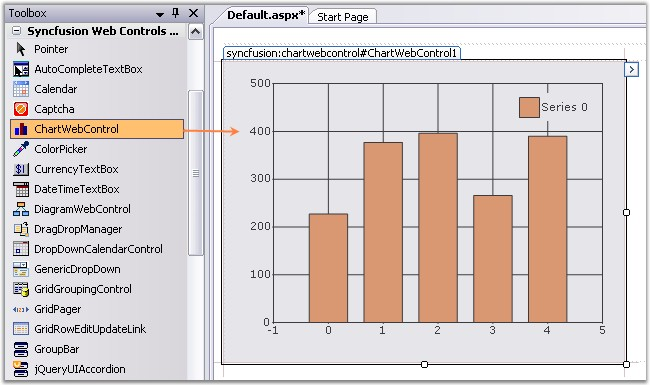
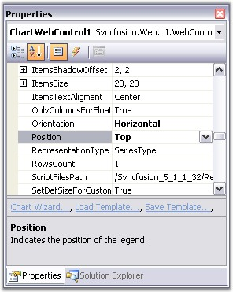

To create a simple chart control and populate it with simple data, follow the steps that are given below.
1. Open Microsoft Visual Studio. Go to File menu and click New Website. In the New Website dialog box, select ASP.NET Web Application template, name the website and click OK.

Figure 6: ASP.NET Web Application template selected in the New Project Dialog Box
A Web application is created:
2. Open the main form of the application in the designer.
3. Drag the Chart Web control from the toolbox onto the web form.

Figure 7: Chart Web control in Toolbox
4. Appearance and behavior-related aspects of the Chart can be controlled by setting the appropriate properties through the properties grid. For example, change the position of the legend for the control to be top aligned by changing the LegendPosition property.

Figure 8: Setting Legend Position Property
5. The data for the Chart can be added through code. Switch to code view in VS.NET and add the method shown below.
|
[C#]
using Syncfusion.Web.UI; using Syncfusion.Web.UI.WebControls.Chart; using Syncfusion.Windows.Forms.Chart;
// Create a new ChartSeries. The string specified is the name of the series. ChartSeries series = this.ChartWebControl1.Model.NewSeries("Series");
// Set the Text property of the series. This will be used by the legend to display a descriptive name. series.Text = series.Name;
// Add points to the series. // format (x, y) series.Points.Add(1, 400); series.Points.Add(2, 385); series.Points.Add(3, 412); series.Points.Add(4, 467); series.Points.Add(5, 478); series.Points.Add(6, 397); series.Points.Add(7, 355); series.Points.Add(8, 456); series.Points.Add(9, 409);
// Set the type of Chart. series.Type = ChartSeriesType.Column;
// Add the series to the Chart. this.ChartWebControl1.Series.Add(series); |
|
[VB.NET]
Imports Syncfusion.Web.UI Imports Syncfusion.Web.UI.WebControls.Chart Imports Syncfusion.Windows.Forms.Chart
' Create a new ChartSeries. The string specified is the name of the series. Dim series As ChartSeries = Me.ChartWebControl1.Model.NewSeries("Series")
' Set the Text property of the series. This will be used by the legend. series.Text = series.Name
' Add points to the series. series.Points.Add(1, 400) series.Points.Add(2, 385) series.Points.Add(3, 412) series.Points.Add(4, 467) series.Points.Add(5, 478) series.Points.Add(6, 397) series.Points.Add(7, 355) series.Points.Add(8, 456) series.Points.Add(9, 409)
' Set the type of Chart. series.Type = ChartSeriesType.Column
' Add the series to the Chart. Me.ChartWebControl1.Series.Add(series) |
6. Now try running the project by selecting the Debug → Start Debugging. The chart will appear as shown below.

Figure 9: Chart Control
See Also